Toymaker Short Film
Advanced Animation Production class, Brown 2016.
Due to the lack of official animation course offerings beyond the introductory sequence at Brown, I proposed a semester-long short film, Toymaker. The team consists of 7 other CG artists, 2 sound artists, a producer, a composer, and 4 pre-production artists.
Last spring I developed the concept; over the summer I led pre-production, worked on prop and character designs, and supervised storyboarding; this semester I led character modeling, layout, and lighting teams, and contributed to the shading, animating, and cloth simulation teams.
Software: Maya, mental ray
For teaser shots, please see my demo reel.
Production
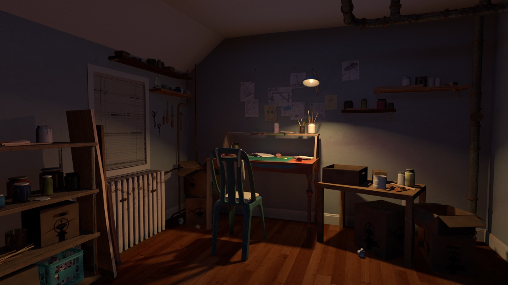
responsible for lighting (night in workroom)
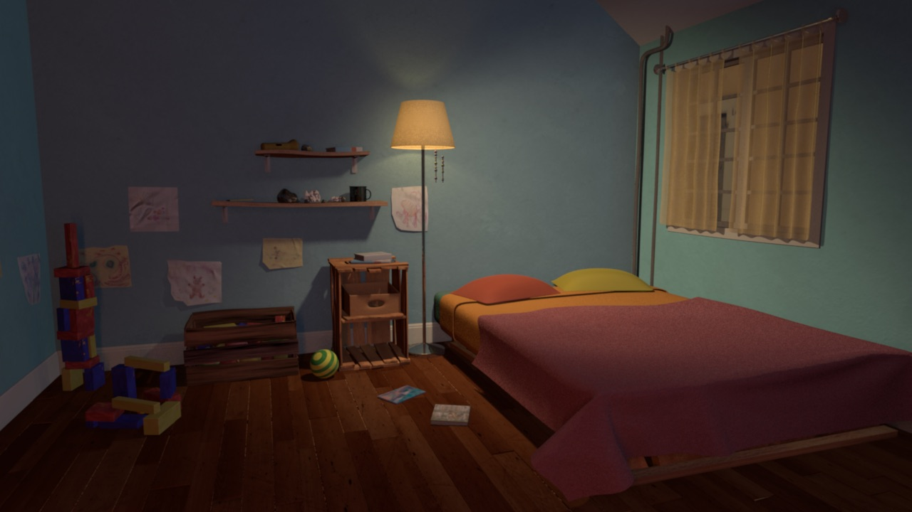
responsible for lighting (night in bedroom)
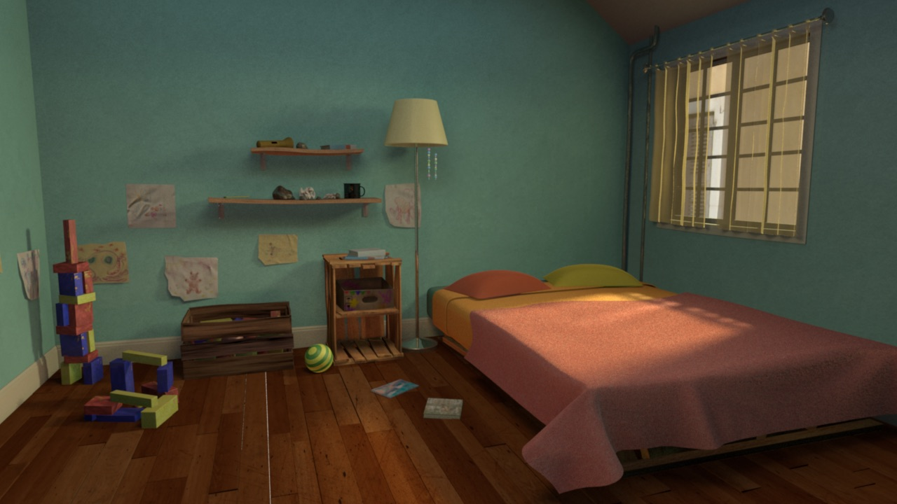
responsible for lighting (day in bedroom)
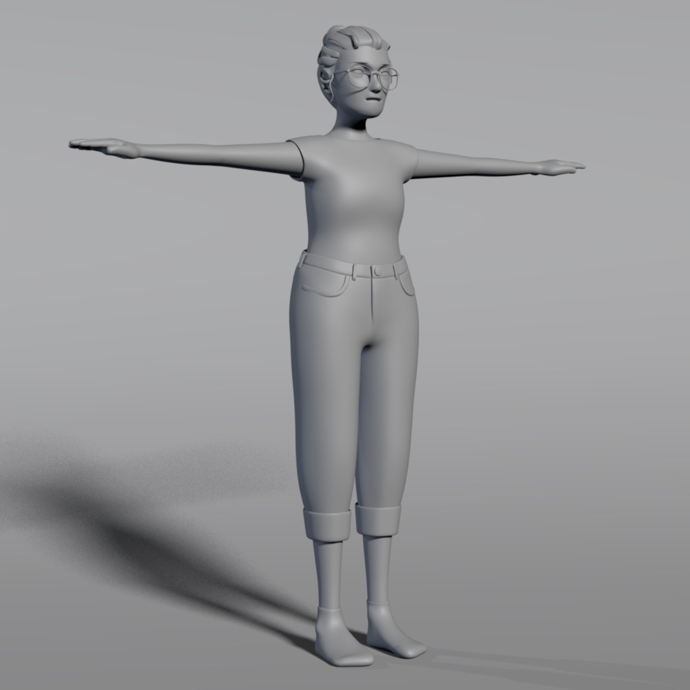
responsible for character modeling
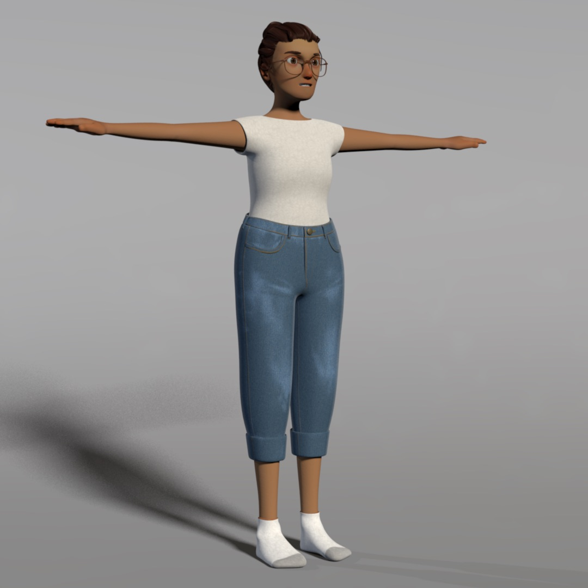
responsible for skin, hair, eye, jeans shading
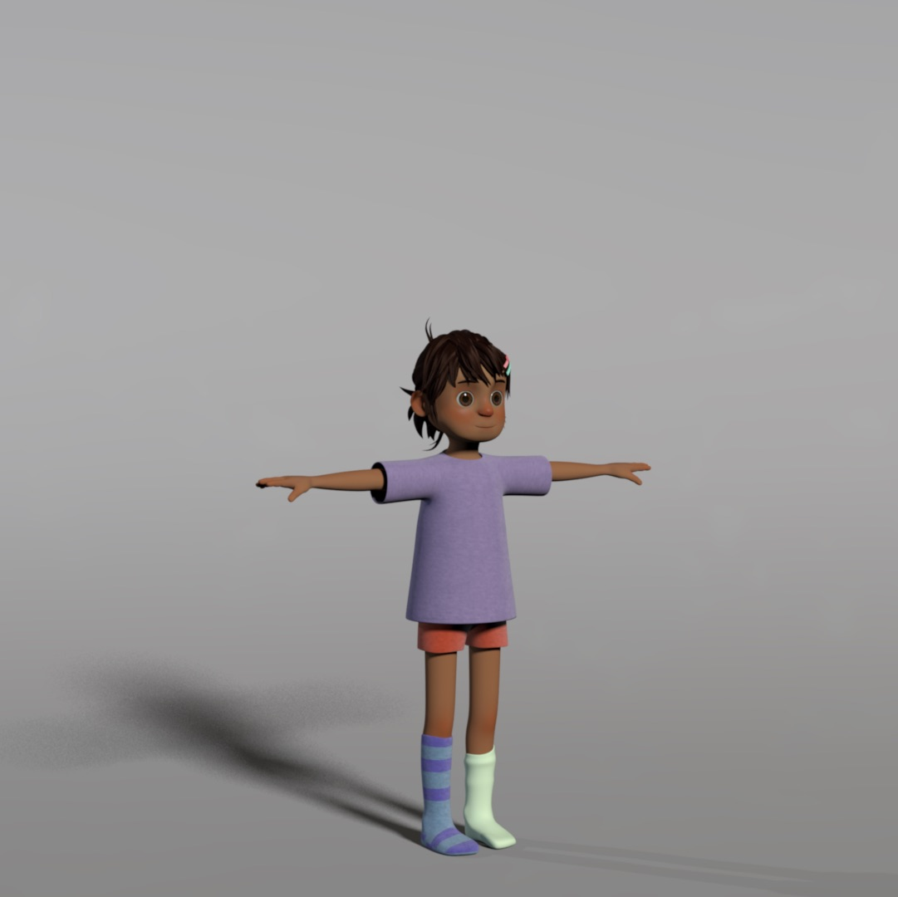
responsible for skin, hair, eye shading
Pre-production
I conceptualized and developed the story in winter/spring 2016. I worked with five other students during summer 2016 on pre-production. Together we
developed the story and script, designed the characters, environments, and props, and storyboards.
I was responsible for prop designs, contributed to the designs of the toymaker,
and integrated existing designs into concept art to ensure a cohesive style.
The story is about a toymaker who reads picture books to her five-year-old daughter.
Since she can't afford to take her daughter to a carnival like the ones in the picture book,
she starts building a miniature model for her daughter that gets more and more elaborate and eventually
threatens their relationship.
Aesthetically, we wanted to convey a certain do-it-yourself attitude of
repurposing objects beyond their existing purpose; the designs needed
to look like they evolved out of necessity and ingenuity and were repaired
to exist past their intended lifespan.

workroom concept
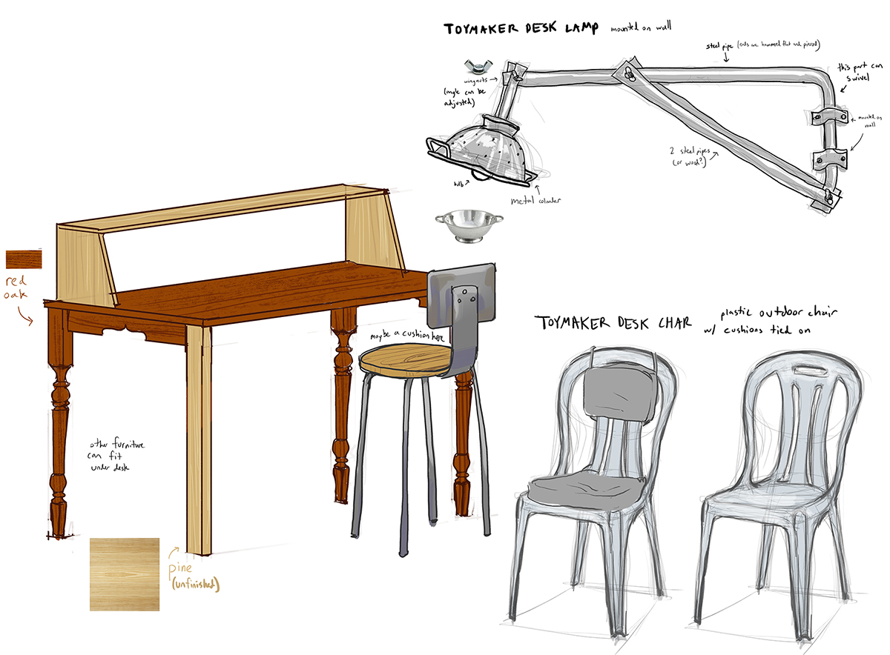
workroom props - the toymaker's desk, chair, and lamp

bedroom concept
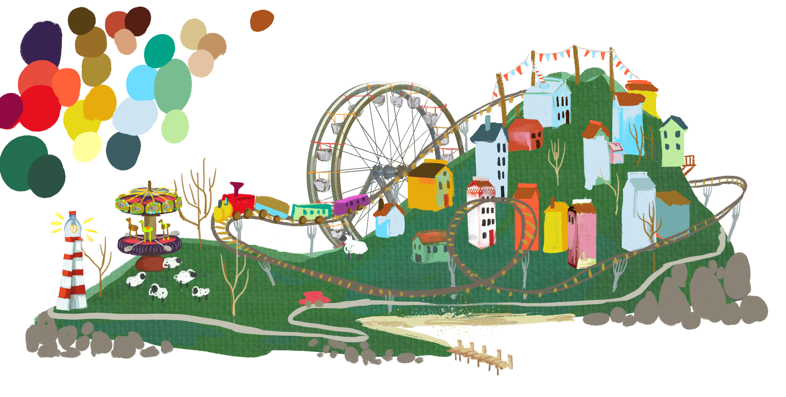
island concept - a miniature model the toymaker builds for her daughter
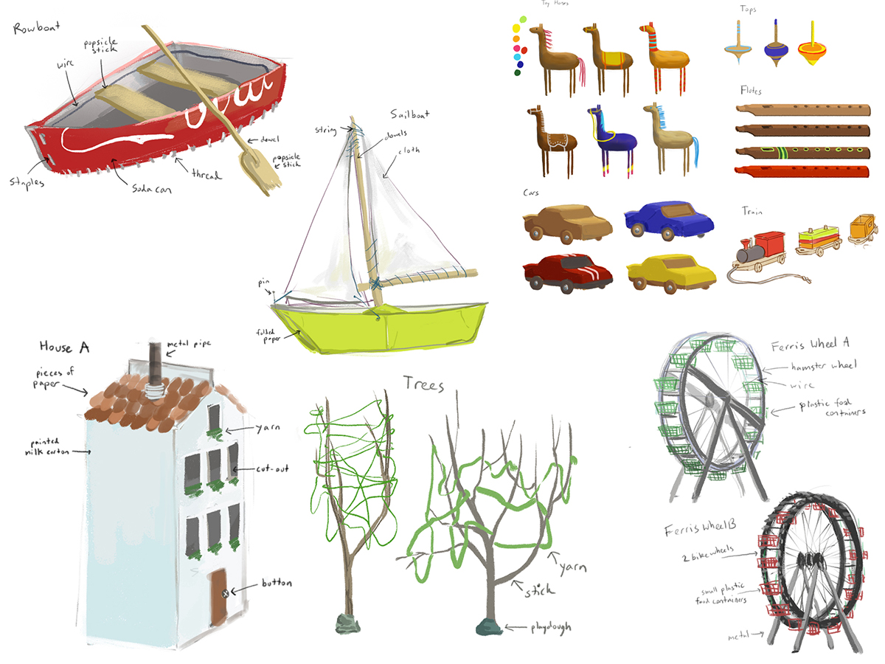
island / toy props - toys repurposed from recycled everday materials
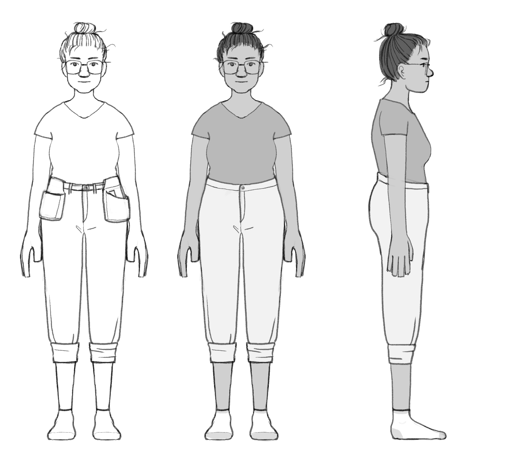
toymaker (Maria) orthographic
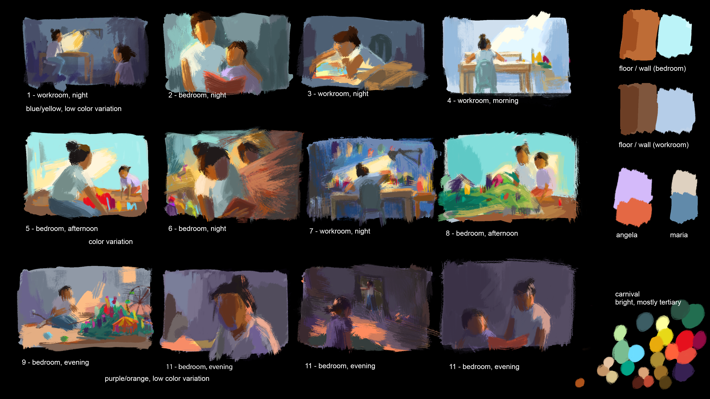
colorscript